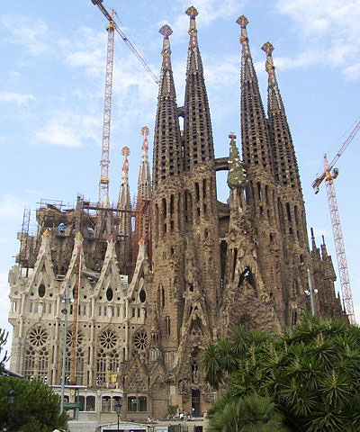
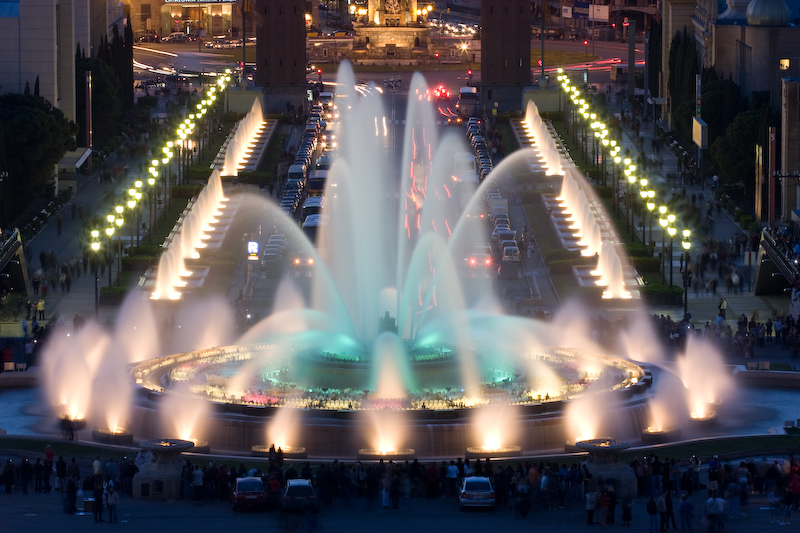
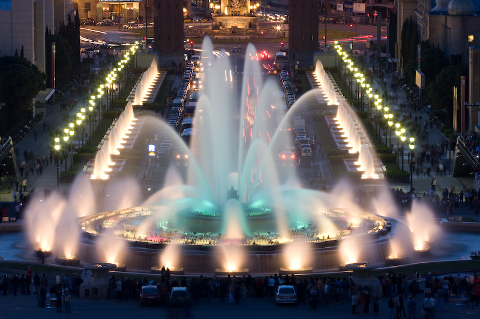

Hiszpania
Pierwsze chwile w Lloret de Mar
Podekscytowanie. To towarzyszące mi uczucie zdecydowanie wybijało się ponad inne. Już żadnych obaw i niepewności. Wakacje poprzedniego roku, jak dotej pory, należały do najlepszych w moim życiu, więc czemu nie tym razem. Oczywiście i tym razem znów wybrałyśmy się razem z moją kuzynka. Wspaniele się złożyło, gdyż udało nam się pojechać ze znajomymi, których poznałyśmy na obozie w Grecji. Szykowała się zatem kolejna przygoda mojego życia.
Lloret de Mar


Barcelona - Park Güel


Barcelona
 
